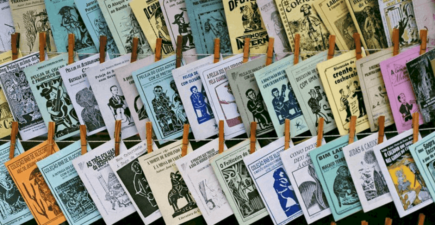

Literatura de Cordel: Versos que Contam Histórias Nordestinas
A Literatura de Cordel, um tesouro cultural do Nordeste brasileiro, emerge como uma forma poética ímpar originada nas feiras e mercados. Com suas raízes profundas na oralidade, os cordéis são folhetos rimados que transcendem o tempo, contando histórias do cotidiano, lendas regionais e as aventuras marcantes do povo nordestino. A simplicidade de sua forma de expressão cativa, transmitindo tradições e preservando a autenticidade da cultura.

História e Evolução
A história da Literatura de Cordel é uma jornada fascinante que remonta ao século XIX. Inicialmente, impressa de maneira artesanal, essa forma de expressão poética ganhou notoriedade nas décadas seguintes, adaptando-se às transformações sociais e tecnológicas. Seus folhetos, inicialmente modestos, tornaram-se instrumentos vitais na preservação cultural, adaptando-se aos desafios modernos e mantendo-se como uma voz autêntica da região.
Principais Temas e Assuntos
Os cordéis exploram uma vasta gama de temas, revelando a riqueza e diversidade da vida nordestina. Desde histórias de amor que enternecem corações até façanhas heroicas que exaltam a bravura do povo, passando por críticas sociais que refletem a realidade, esses versos simples carregam consigo a essência da cultura regional. Narrativas do cotidiano, lendas populares e episódios marcantes ganham vida nas páginas desses folhetos, conectando-se de maneira íntima com o público.
Mestres Cordelistas
Os mestres cordelistas desempenham um papel fundamental na preservação e inovação dessa forma de expressão. Nomes como Leandro Gomes de Barros, João Martins de Athayde e Patativa do Assaré são venerados por suas contribuições notáveis. Seus cordéis não apenas preservam tradições antigas, mas também introduzem novos temas e estilos. Esses mestres, verdadeiros guardiões da cultura nordestina, deixam um legado inestimável, destacando-se por sua poesia única e por moldar o panorama da Literatura de Cordel ao longo do tempo.
Principais Cordelistas Atuais e Suas Obras
Bráulio Bessa

Bráulio Bessa é um renomado cordelista e declamador contemporâneo. Suas obras exploram temas como amor, superação e suas raízes nordestinas. Algumas de suas obras populares incluem "Poesia que Transforma" e "Um Coração sem Fronteiras".
Marco Haurélio
Marco Haurélio é conhecido por sua habilidade em traduzir a realidade social em versos cordelistas. O cordelista aborda questões contemporâneas, como a seca e a migração. Entre suas obras, destaca-se "A Seca no Nordeste".
Jarid Arraes
Jarid Arraes é uma cordelista, escritora e poetisa que traz uma perspectiva feminina para o mundo do cordel. Seu trabalho aborda questões de gênero, feminismo e empoderamento. "As Lendas de Dandara" e "Heroínas Negras Brasileiras em 15 Cordéis" são algumas de suas contribuições notáveis.